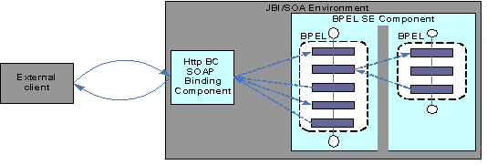
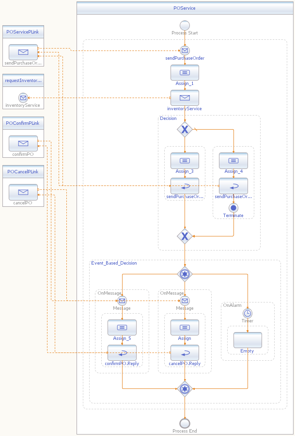
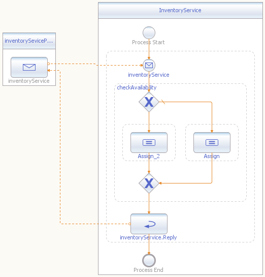

Kiran Bhumana, Ryan Kennedy, Shauna Pickett-Gordon
Message-driven execution has become an important aspect of many programming languages. If you are familiar with JMS or any other messaging architecture, especially with the usage of event listener patterns, you'll find a similar approach in the BPEL language.
Consider the purchase order service example discussed in the first three BluePrints. It would also be useful to be able to respond to an event--external or internal--that might occur after the BPEL process begins executing. An example of such an event is a client sending a cancellation message or a confirmation message.
The Java language itself supports message-based coordination of events. However, BPEL provides a message-driven execution pattern that helps minimize the additional code needed for coordination. BPEL also provides an important and useful construct: a timer-based execution path, as an alternative to a message-driven path. These advantages leave developers free to spend more time thinking about the core business logic of their BPEL processes.
This BluePrint focuses on the design aspects and common usage patterns of message-driven event coordination using BPEL.
BPEL lets developers define alternative execution paths based on Timer
or Message events.
A Message event, defined by an onMessage
construct, waits for a corresponding message to arrive before
proceeding with a specified execution path. An onMessage
construct is defined exactly the same way as a receive
activity where partnerLink, portType, and operation
attributes are specified.
A Timer event, defined by an onAlarm
activity, waits for a specified duration or deadline before triggering
the appropriate execution path.
BPEL provides a pick construct for situations
requiring multiple alternative execution paths. When a BPEL process
encounters a pick activity, it waits until either an onMessage
or an onAlarm
construct occurs. In this manner, onAlarm and onMessage
constructs contend for the execution path of the instance. Of the
multiple alternative paths provided by the pick
construct, only one path is ultimately executed.
If you worked through the second BluePrint, Asynchronous Web Service
Interactions
Using BPEL, you noticed two usage patterns of the pick
construct: a timer-based path and an alternative message-event-based
path. Both BluePrints use correlation, too; if you're not already
familiar with it, see the second BluePrint.
The services used in this BluePrint go beyond the scope of the first three BluePrints. For the basic BPEL business logic and behavior of this example, see the first BPEL BluePrint. For more information on using correlation, see the second BPEL BluePrint.
In addition to the BPEL processes POService and InventoryService
as defined in the first BluePrint, this BluePrint uses the web services
confirmPO and cancelPO.
The POService process orchestrates all
purchase-order-related services, and it provisions the two additional
web services.
The following figure shows a message-driven path implementing an asynchronous service.

Figure 1: A Message-driven Path With Asynchronous Service Implementation
The following constructs are used in this BluePrint's scenario:
pickonMessage with correlationsonAlarmWhen you're developing a BPEL process, carefully consider the events to which the process should react, as well as how long a process should wait when orchestrating services.
A pick activity demonstrates the orchestration of the
process in which a different path of execution is chosen, based on
either the arrival of messages or a time-triggered event.
Let's look at how a message-driven execution path can be used. In this pattern, four services are involved. Three of those services are consumed by an external client through SOAP over HTTP:
The fourth is an inventory check service consumed by the BPEL process that provisions the purchase order service.
An external client consumes POService. Upon receiving
a request, POService checks with InventoryService
and returns either a reply or a fault to the external consumer. If the
returned value is a valid reply, the instance is associated with a
correlation ID. If a fault is replied, the instance is terminated.
Upon receiving the reply, the external consumer decides whether to
send a confirmation of the purchase order, to send a cancellation of
the purchase order, or to not take any action at all. The purchase
order service, after returning a valid response, awaits either a
confirmation or cancellation of the order within a specified length of
time. The POService BPEL process defined here waits for
100 seconds, as stipulated.
Since the purchase order request and the request's confirmation or
cancellation are events that need to be coordinated, correlation is
used to route the associated messages. The purchase order instance is
associated with the correlation ID while the reply to the purchase
order service is being executed. The same correlation ID is expected to
appear in the orderId attribute of the confirmation or
cancellation message.
Refer to the first
BluePrint
for an explanation of how the POService and InventoryService
WSDLs are declared.
The POStatus WSDL defines
two operations: a confirmation and a cancellation.
<portType name="POStatusPortType">The
<operation name="confirmPO">
<input name="confirmPO"
message="tns:POConfirmMesg"></input>
<output name="confirmPOStatus"
message="tns:POStatusMesg"></output>
<fault name="confirmPOFault"
message="ns:orderFaultType"></fault>
</operation>
<operation name="cancelPO">
<input name="cancelPO"
message="tns:POCancelMesg"></input>
<output name="cancelPOStatus"
message="tns:POStatusMesg"></output>
<fault name="cancelPOFault"
message="ns:orderFaultType"></fault>
</operation>
</portType>
postatus WSDL defines a property, OrderID, and
three
property aliases.<bpws:property name="OrderID"
type="xsd:int"/>
<bpws:propertyAlias part="purchaseOrder"
propertyName="tns:OrderID"
messageType="tns:POConfirmMesg">
<bpws:query>/purchaseOrder/orderId</bpws:query>
</bpws:propertyAlias>
<bpws:propertyAlias part="purchaseOrder"
propertyName="tns:OrderID"
messageType="tns:POCancelMesg">
<bpws:query>/purchaseOrder/orderId</bpws:query>
</bpws:propertyAlias>
<bpws:propertyAlias part="purchaseOrder"
propertyName="tns:OrderID"
messageType="ns:POMessage">
<bpws:query>/purchaseOrder/orderId</bpws:query>
</bpws:propertyAlias>
Three property aliases--different because they are associated with
different messages--are defined on the same property. If you define a
correlation on such a property (in this case, OrderID),
you can use the correlation for multiple messages with which this
property is associated. The association is made indirectly through the
property aliases.
POService
WSDL's POMessage and POStatus WSDL's
POConfirmMesg
and POCancelMesg.
For details on how to use correlation, refer to the BPEL specification.
See the first
BluePrint for
information on how the POService and InventoryService
processes are defined.
The following correlationSet
is defined in POService.
<correlationSets>
<correlationSet name="POConfirmationSet"
properties="ns0:OrderID"/>
</correlationSets>
<reply name="sendPurchaseOrder.Reply"
partnerLink="POServicePLink"
portType="pos:purchaseOrderPT"
operation="sendPurchaseOrder"
variable="purchaseOrderRequest">
<correlations>
<correlation set="POConfirmationSet"
initiate="yes"/>
</correlations>
</reply>
Within a pick activity, you can define one or more onMessage
activities and zero or more onAlarm activities. The
following code sample shows how multiple onMessage
activities can be used to receive either an order confirmation message
or an order cancellation message.
Correlation value is evaluated and set during the process of the
reply activity.
<reply name="sendPurchaseOrder.Reply"
partnerLink="POServicePLink"
portType="pos:purchaseOrderPT"
operation="sendPurchaseOrder"
variable="purchaseOrderRequest">
<correlations>
<correlation set="POConfirmationSet"
initiate="yes"/>
</correlations>
</reply>
The onMessage activity has the same set of attributes
as the receive activity. Notice also how correlations are
used to route these messages to the appropriate process instance.
<pick>
<onMessage partnerLink="POStatusPLink"
portType="ns0:POStatusPortType"
operation="confirmPO"
variable="confirmPORequest">
<correlations>
<correlation set="POConfirmationSet"
initiate="no"/>
</correlations>
<onMessage partnerLink="POStatusPLink"
portType="ns0:POStatusPortType"
operation="cancelPO"
variable="cancelPORequest">
<correlations>
<correlation set="POConfirmationSet"
initiate="no"/>
</correlations>
....
</pick>
Within a pick, the
developer
can also use an onAlarm activity to specify
either a duration or a deadline expression. In this example, a for
attribute is used to specify the duration of 100 seconds, after which
an alarm will occur.
<pick>
....
<onAlarm>
<for>'P0Y0DT100S'</for>
<sequence>
....
</sequence>
</onAlarm>
</pick>
You would use the following expression to specify a duration of 2 years, 10 months, 14 days, 7 hours, 11 minutes, and 44 seconds:
P2Y10M14DT7H11M44SWhen you specify a point in time, the until attribute
decides the exact date on which the alarm occurs.
A visual form of the POService BPEL process is
shown next. For implementation details, see the source
files.

Figure 2: The POservice BPEL Process
The following diagram illustrates the InventoryService BPEL
process.

Figure 3: The InventoryService BPEL Process
To run the scenarios, the user
needs to first invoke the poServiceRequest and then call either a
poRequestConfirm or poRequestCancel. Notice that the orderId value
is
same in all the requests.
This instance of input XML initiates a PORequest:
<soapenv:Envelope xmlns="http://manufacturing.org/xsd/purchase"
xmlns:soapenv="http://schemas.xmlsoap.org/soap/envelope/"
xmlns:xsi="http://www.w3.org/2001/XMLSchema-instance"
xsi:schemaLocation="http://schemas.xmlsoap.org/soap/envelope/ http://schemas.xmlsoap.org/soap/envelope/">
<soapenv:Body>
<sendPurchaseOrder>
<purchaseOrder>
<purchaseOrder xmlns="http://manufacturing.org/xsd/purchase">
<orderId>00001234</orderId>
<customerId>999666333</customerId>
<orderDescription>OrderVal_Any_Description</orderDescription>
<price></price>
</purchaseOrder>
</purchaseOrder>
</sendPurchaseOrder>
</soapenv:Body>
</soapenv:Envelope>
This instance of input XML confirms the earlier requested purchase order:
<soapenv:Envelope xmlns="http://manufacturing.org/xsd/purchase" xmlns:soapenv="http://schemas.xmlsoap.org/soap/envelope/"
xmlns:pur="http://manufacturing.org/xsd/purchase" xmlns:xsi="http://www.w3.org/2001/XMLSchema-instance"
xsi:schemaLocation="http://schemas.xmlsoap.org/soap/envelope/ http://schemas.xmlsoap.org/soap/envelope/">
<soapenv:Body>
<pur:purchaseOrder>
<pur:orderId>00001234</pur:orderId>
<pur:customerId>999666333</pur:customerId>
<pur:orderDescription>I Want to confirm the order</pur:orderDescription>
</pur:purchaseOrder>
</soapenv:Body>
</soapenv:Envelope>
This instance of input XML cancels the earlier requested purchase order:
<soapenv:Envelope xmlns="http://manufacturing.org/xsd/purchase" xmlns:soapenv="http://schemas.xmlsoap.org/soap/envelope/"
xmlns:pur="http://manufacturing.org/xsd/purchase" xmlns:xsi="http://www.w3.org/2001/XMLSchema-instance"
xsi:schemaLocation="http://schemas.xmlsoap.org/soap/envelope/ http://schemas.xmlsoap.org/soap/envelope/">
<soapenv:Body>
<pur:purchaseOrder>
<pur:orderId>00001234</pur:orderId>
<pur:customerId>999666333</pur:customerId>
<pur:orderDescription>Naa, i will cancel the oder</pur:orderDescription>
</pur:purchaseOrder>
</soapenv:Body>
</soapenv:Envelope>